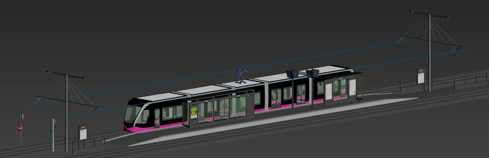

Modélisation 3D · 3ds Max · Unity
Le tramway de Dijon
Modéliser un tramway et son environnement, puis le mettre en mouvement dans Unity.
- Format
- Scène 3D
- Modélisation et textures
- 3ds Max · Réalisation personnelle
- Intégration
- Unity
Le projet en bref.
- Le besoin
- Reconstituer le tramway de Dijon et son environnement en 3D, en respectant les formes et l’identité du véhicule réel.
- Mon rôle
- Réaliser personnellement la modélisation et l’ensemble des textures sous 3ds Max, à partir de références du véritable tramway.
- Le résultat
- Une scène présentant le véhicule à son arrêt, avec ses rails et les éléments de son environnement. La fiche conserve une vue d’ensemble de cette réalisation.

01 / COMPRENDRE LE BESOIN
Contexte et objectif
Ce projet consiste à modéliser le tramway de Dijon en prenant le véhicule réel comme référence. L’objectif est de retrouver ses formes et son identité dans une réalisation 3D, puis de le présenter dans son environnement. Le sujet impose de partir d’un objet existant : le modèle doit rester reconnaissable et les différents éléments de la scène doivent conserver une cohérence avec cette référence.
J’ai réalisé moi-même l’ensemble du travail de modélisation et de textures sous 3ds Max. Le projet associe ainsi l’observation d’un sujet réel à sa reconstruction numérique. La présentation conservée dans le portfolio montre le véhicule à son arrêt, avec les rails et les lignes électriques, et le projet comprend une mise en mouvement dans Unity.
02 / PASSER À LA RÉALISATION
La réalisation
La réalisation sous 3ds Max couvre le tramway et les éléments de son environnement. La modélisation donne forme au véhicule et à la scène, tandis que les textures participent à l’identification des différentes surfaces. L’inspiration vient du véritable tramway de Dijon : cette référence guide la reconstruction de l’objet et son apparence. Le visuel permet d’observer le résultat dans son ensemble, avec le véhicule replacé dans une situation d’arrêt.
Le travail se prolonge par une scène Unity destinée à la mise en mouvement du tramway. Cette seconde dimension relie la création du modèle à son utilisation dans un environnement animé. Les éléments présentés ici se concentrent sur le rendu 3D conservé ; une nouvelle capture de l’animation permettra ensuite de montrer plus précisément cette partie du projet.
03 / MA PLACE DANS LE PROJET
Ma contribution
J’ai réalisé l’ensemble du projet moi-même, avec 3ds Max pour la modélisation et les textures. Cette contribution comprend le véhicule et les éléments qui composent son environnement, en m’appuyant sur le tramway réel comme référence. La fiche met ainsi en avant une réalisation personnelle complète, du sujet observé à la représentation 3D présentée.
Le projet me permet de montrer un autre aspect de mon parcours que les expériences de réalité virtuelle : le travail de construction et d’apparence d’un modèle 3D. Le choix d’un objet réel donne aussi un point de comparaison direct au visiteur, qui peut reconnaître le tramway et comprendre le contexte de la scène.
04 / PRENDRE DU RECUL
Résultats et suite
Le résultat conservé présente le tramway et son environnement dans une scène cohérente, avec les éléments permettant de situer le véhicule à son arrêt. Il réunit un travail personnel de modélisation et de textures, complété par une mise en mouvement dans Unity. Cette réalisation constitue un exemple concret de passage d’une référence réelle à un objet numérique.
La prochaine mise à jour de cette fiche consistera à ajouter des vues de détail et une démonstration de l’animation lorsque les fichiers correspondants auront été retrouvés. Ces éléments permettront de mieux montrer la construction du modèle, les textures et le mouvement, en complément de la vue d’ensemble actuellement disponible.